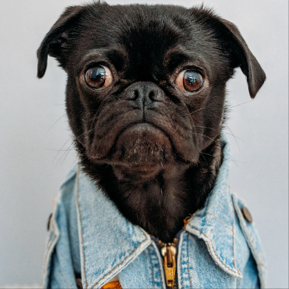
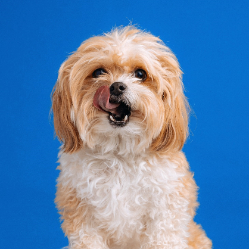
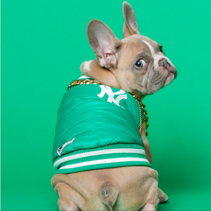
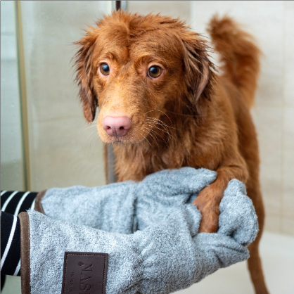
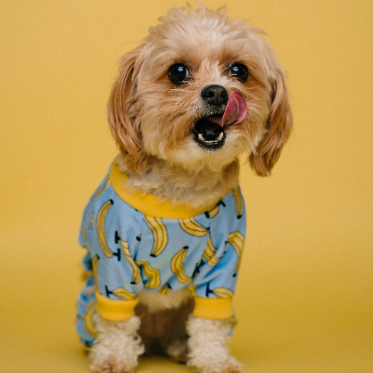
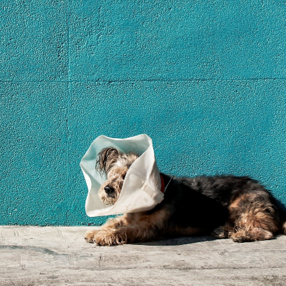
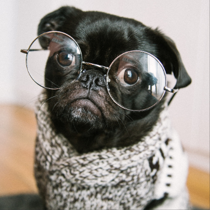
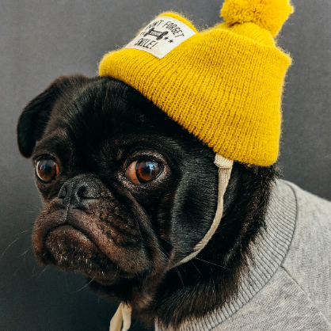
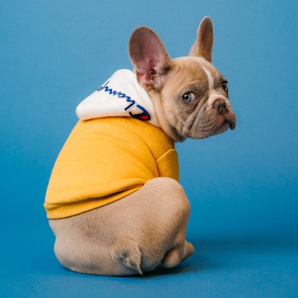
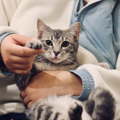

Tu le oferi a doua șansă!
Cu ajutorul sprijinului vostru neprețuit, animale care altădată nu aveau nici o șansă acum trăiesc vieți pline de bucurie și afecțiune.
Fiecare donație, fie că este mare sau mică, fiecare moment oferit ca voluntar și fiecare act de generozitate și empatie contribuie enorm.
Voi sunteți cei care aduceți lumină în viețile acestor suflete nevinovate, oferindu-le nu doar adăpost și îngrijire, ci și dragostea de care au atâta nevoie.
Datorită vouă, poveștile de suferință se transformă în povești de speranță și vindecare.
Vă mulțumim din inimă pentru că sunteți alături de noi și de prietenii noștri necuvântători.
Faceți cunoștință virtual cu animăluțele aflate în grija noastră!
De la începuturile noastre, am salvat și îngrijit peste 600 de animale abandonate și rănite. Intervenim rapid în situații de urgență, oferind tratamente medicale, adăpost temporar și reabilitare.
Pe lângă îngrijirea medicală, ne străduim să găsim cămine permanente și iubitoare pentru animalele noastre, organizând târguri de adopție și campanii de conștientizare a comunității.
Prin aceste eforturi, transformăm suferința în speranță și oferim o nouă șansă la viață pentru prietenii noștri necuvântători.









Salvarea și îngrijirea animalelor sunt esențiale nu doar pentru bunăstarea individuală a fiecărui animal, ci și pentru echilibrul și sănătatea comunităților noastre.
Animalele abandonate sau rănite au nevoie de ajutor pentru a supraviețui și a se recupera, iar organizațiile precum „Protecția Patrupedelor sunt dedicate oferirii acestui ajutor crucial.
Fiecare viață salvată contează și aduce un impact pozitiv în societate, contribuind la reducerea numărului de animale fără adăpost și la promovarea unei conviețuiri armonioase între oameni și animale.
Prin intervențiile rapide și îngrijirea medicală oferite, aceste organizații transformă suferința în speranță și oferă o a doua șansă la viață animalelor aflate în nevoie.
Acțiunile de salvare și îngrijire ale ONG-urilor merită susținute pentru că ele nu doar protejează animalele, ci și educă comunitatea despre responsabilitatea față de animale. Fiecare donație, oră de voluntariat și sprijin oferit acestor organizații contribuie la dezvoltarea unor programe sustenabile de protecție a animalelor, care includ intervenții medicale, adăposturi temporare și campanii de adopție.
Susținerea acestor acțiuni înseamnă a sprijini o cauză nobilă care promovează compasiunea, respectul și dragostea pentru toate ființele vii.
Serviciile noastre
La „Protecția Patrupedelor”, ne dedicăm salvării și protejării animalelor, în special câini și pisici.
Prin eforturile noastre continue și sprijinul comunității, oferim o gamă variată de servicii menite să asigure bunăstarea acestor suflete nevinovate.
Aceste servicii sunt fundamentul misiunii noastre de a oferi o viață mai bună și mai sigură pentru câinii și pisicile fără stăpân.
Toate aceste eforturi nu ar fi posibile fără sprijinul neprețuit al voluntarilor, donatorilor și sponsorilor noștri.
Voluntarii noștri dedicați își oferă timpul și energia pentru a ajuta la toate aspectele activităților noastre, de la salvarea animalelor până la organizarea evenimentelor de adopție și educație.
Donatorii noștri generoși contribuie financiar pentru a asigura resursele necesare tratamentelor medicale și adăposturilor, în timp ce sponsorii noștri de încredere ne oferă suport logistic și material.
Împreună, formăm o comunitate unită și dedicată care luptă pentru a oferi o viață mai bună și mai sigură pentru câinii și pisicile fără stăpân.
Mulțumim tuturor celor care ne sprijină misiunea și contribuie la bunăstarea animalelor.
Adoptă!
Adopția unui animal este un act de compasiune care are un impact profund asupra vieții unui animal și asupra comunității.
În loc să achiziționezi un animal de la un crescător sau dintr-un magazin, adopția dintr-un ONG înseamnă că oferi o a doua șansă unui suflet care a cunoscut suferința și abandonul.
Prin adoptarea unui animal din adăpost, salvezi o viață și eliberezi un loc pentru un alt animal aflat în nevoie.
Acest gest simplu, dar profund, contribuie la reducerea supraaglomerării adăposturilor și la promovarea unui mediu mai sănătos și mai sigur pentru toți animalele.
De ce să adopți? Iată de ce!
Donează
Donațiile joacă un rol esențial în susținerea activităților noastre și în asigurarea bunăstării animalelor fără stăpân. Fiecare contribuție financiară ne ajută să oferim tratamente medicale urgente, adăposturi temporare sigure și hrană adecvată pentru animalele aflate în nevoie.
Cu ajutorul donațiilor, putem să intervenim rapid în situații de urgență și să oferim îngrijire specializată pentru animalele rănite sau bolnave.
Fiecare gest de generozitate din partea donatorilor noștri are un impact direct asupra vieții acestor suflete nevinovate, transformând suferința în speranță și dându-le o nouă șansă la viață.
Donează pentru programele noastre
Campania de sterilizare
Orice contribuție contează! Poți dona începând de la 10 RON pentru a ne ajuta să continuăm aceste acțiuni esențiale.
Banii sunt folosiți pentru costuri medicale, transport și întreținerea spațiilor de recuperare.

Proiectul „Prima șansă”
Va avea ca scop adoptarea și oferirea unei griji speciale puilor de animale abandonate sau care nu pot fi întreținute de foștii stăpâni. Puteți ajuta donând de la 15 RON pentru a ne ajuta să inaugurăm proiectul care este plănuit să înceapă din luna viitoare, pentru a chiziționa suplimente speciale pentru tratamentelor puilor de pisici și câini.
Proiectul „Căsuțe călduroare”
Adopția ajută la decongestionarea adăposturilor, oferind astfel resurse și spațiu pentru alte animale aflate în situații critice. În plus, sprijini organizațiile care se străduiesc să ofere îngrijire și asistență acestor animale.
Donează 2% din impozitul pe venit la „Protecția Patrupedelor”
Impozitul pe venit este oricum plătit statului, fiind dreptul tău să alegi dacă vrei sau nu să îl aloci unei cauze nobile.
Asociația pentru Protecția Animalelor „Protecția Patrupedelor” este o organizație non-profit, prin urmare nu beneficiază de finanțare din partea statului pentru nicio activitate întreprinsă.
De aceea o resursă importanta a asociației poate fi generată de redirecționarea impozitului pe venit al salariaților. Astfel și tu poti ajuta animalele, fără a fi nevoit să renunți la o parte din banii tăi.
Fie că ești salariat, sau ai înregistrat în decursul anului trecut venituri din activități proprii, ai dreptul să redirecționezi 2% din veniturile realizate către „Protecția Patrupedelor”, prin completarea formularului 230 (pentru salariați).
Completează formularul PDF